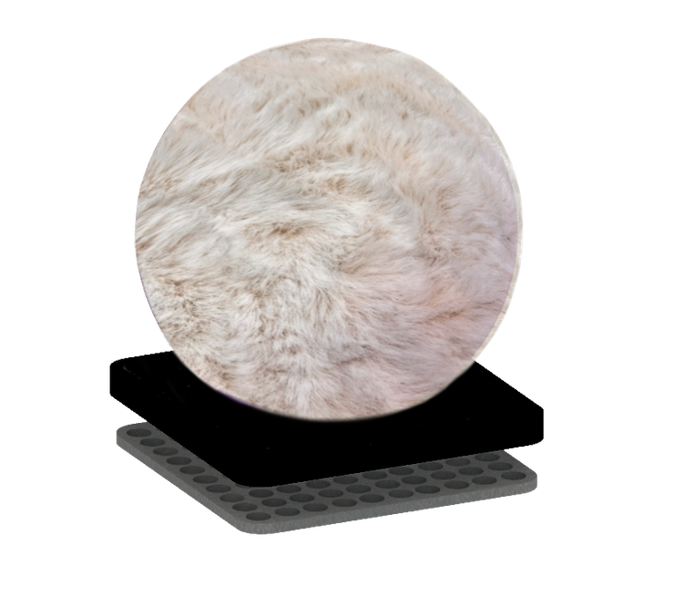

YuTea
a development in process
Most Recent · Product Design
ORB
redesigning the portable vacuum cleaner

Where do I put my vacuum cleaner?
Placing a portable vacuum in every room is impractical and clutters the home. Each piece of furniture collects dust differently — sofas trap lint, beds gather dust underneath, cabinets collect particles in tight corners — yet most portable vacuums aren't adaptable enough to clean all of these surfaces with a single device. And while the market keeps producing the same gun-shaped handhelds, they remain objects we hide away.
We decorate our homes — then why not our vacuum cleaners?
ORB answers both gaps at once: one versatile cleaner for the whole home, designed as an object worth leaving out.
Form
The body is a single sphere in deep purple, with no visible sensors, bumpers, or buttons breaking the surface. The color and attitude draw from Yayoi Kusama's Violet Obsession (1994) — an everyday object transformed until it demands to be looked at. Resting on its compact dock, ORB reads as décor first and appliance second.

At rest — ORB on its compact docking station, charging between cleans.
Designed around the body
Ergonomics research shaped the engineering brief: studies show discomfort while vacuuming rises sharply with weight and time — especially in the wrist — and that keeping a vacuum's center of mass near the hand significantly lowers muscle load. ORB's balanced, lightweight spherical form keeps its mass centered in the palm.
- Compact, powerful suction
- Cordless with fast charging
- Ergonomic palm grip
- Balanced, lightweight body
- Low-noise operation
- Smart dust detection
- Reusable dust container
- Compact docking station
Construction
ORB is built in two parts: a removable outer shell and an egg-shaped inner core that houses the motor, filter, and dust container. Splitting the form keeps the exterior clean and continuous while making the inside easy to access, empty, and maintain.

The outer shell lifts away from the inner core — the working machine stays serviceable without compromising the sealed exterior.
Materials that match your home
Because the shell is separate from the core, it can be finished in more than plastic. ORB's covers come in materials that belong on furniture — pebbled leather, woven cotton, faux fur — so it blends into a living room shelf, a kitchen counter, or a car console instead of hiding under them.

One of the swappable covers — ORB in faux fur, at home among cushions and throws.